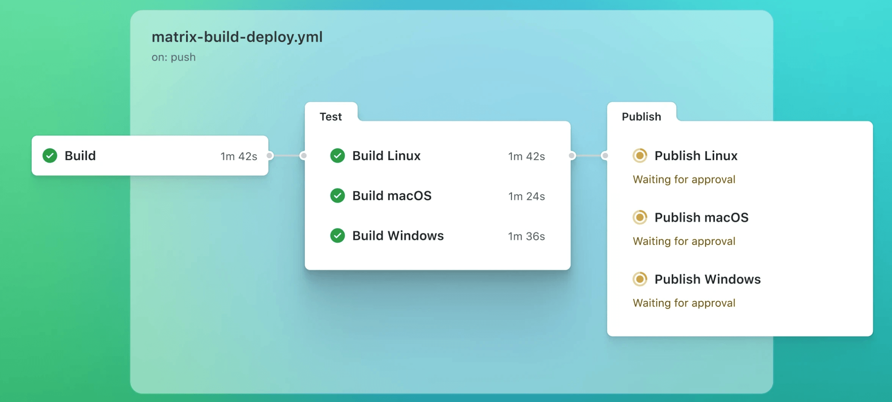

GitHub Actions
GitHub Actions es la plataforma de automatización integrada de GitHub, que te permite definir y ejecutar Workflows automatizados directamente en tu repositorio de código, sin necesidad de ninguna herramienta externa de CI/CD.
Los usos habituales incluyen: ejecutar pruebas automáticamente después de un push de código, desplegar automáticamente al servidor después de fusionar un PR, ejecutar periódicamente scripts de extracción de datos, etc.

GitHub Actions escompletamente gratuito para repositorios públicosy los repositorios privados disponen de 2000 minutos gratuitos al mes.
Conceptos clave
Antes de empezar a escribir archivos de configuración, es necesario entender los siguientes conceptos clave; su relación es la siguiente:
仓库（Repository）
└── Workflow（工作流） ← 一个 .yml 文件 = 一个 Workflow
├── Event（触发事件） ← 什么情况下启动这个 Workflow，如 push、PR
└── Job（作业）× N ← 一个 Workflow 可以包含多个并行或串行的 Job
├── Runner（运行器） ← 执行 Job 的服务器，如 ubuntu-latest
└── Step（步骤）× N ← Job 内按顺序执行的一系列操作
├── Action ← 可复用的封装好的操作，如 actions/checkout
└── Run ← 直接执行 Shell 命令
| Concepto | Descripción | Analogía |
|---|---|---|
| Workflow (flujo de trabajo) | Todo el flujo de automatización, definido por un.ymlarchivo, almacenado en el.github/workflows/directorio |
Un plan de trabajo completo |
| Event (evento) | Condiciones que activan la ejecución de un Workflow, como push de código, creación de PR, tareas programadas, etc. | Condiciones de inicio del plan |
| Job (trabajo) | Una unidad de tarea independiente dentro de un Workflow. Cada Job se ejecuta en una máquina virtual independiente; varios Jobs se ejecutan en paralelo por defecto. | Un capítulo dentro del plan |
| Step (paso) | La unidad mínima de operación que se ejecuta secuencialmente dentro de un Job; puede ser un comando Shell o una Action. | Cada paso concreto dentro de un capítulo |
| Action (acción) | Operaciones reutilizables y empaquetadas, provenientes de GitHub oficial, de terceros o escritas por ti; medianteusesla referencia a |
plantillas de herramientas listas para usar |
| Runner (ejecutor) | Servidor que ejecuta el Job. GitHub ofrece tres entornos administrados: Ubuntu, Windows y macOS. | Personal que ejecuta el plan |
Crear el primer Workflow
1. Estructura de directorios
Todos los archivos de Workflow deben almacenarse en el directorio raíz del repositorio, dentro de.github/workflows/la carpeta, y el nombre del archivo debe terminar en.yml 或 .yamlEl nombre del archivo se puede personalizar:
your-repo/ ├── .github/ │ └── workflows/ │ ├── ci.yml ← 持续集成流程（如运行测试） │ ├── deploy.yml ← 部署流程 │ └── scheduled.yml ← 定时任务 ├── src/ ├── package.json └── README.md
Un repositorio puede tener varios archivos de Workflow; son independientes entre sí y cada uno se activa mediante los eventos definidos.
2. El Workflow más sencillo
A continuación se muestra un ejemplo básico: cada vez que se hace push de código al repositorio, se imprime una línea "Hello, GitHub Actions!".
Ejemplo
name: Hello World # Nombre del Workflow; se muestra en la página de GitHub Actions
on: push # Condición de disparo: se activa cuando hay un push de código en cualquier rama
jobs: # Define todos los Jobs
say-hello: # ID del Job (nombre personalizado, único dentro del mismo Workflow)
name: Imprimir saludo# Nombre mostrado del Job (opcional; si no se indica, se muestra el ID del Job)
runs-on: ubuntu-latest # Especifica el entorno de ejecución: usa la última versión de la máquina virtual Ubuntu proporcionada por GitHub
steps: # Todos los pasos de este Job se ejecutan en orden
- name: Imprimir mensaje# Nombre del Step (opcional; se usa para identificar este paso en los registros)
run: echo "Hello, GitHub Actions！" # run: ejecuta directamente un comando Shell
Los archivos YAML son muy sensibles a la sangría; debes usarespaciospara la sangría; no uses la tecla Tab. Se recomienda usar VS Code e instalar el complemento YAML, que permite detectar errores de formato en tiempo real.
Eventos desencadenantes (on)
onEl campo on define qué eventos desencadenan este Workflow. Puede ser un solo evento o una combinación de varios.
1. Eventos desencadenantes comunes
| Evento | Momento de activación | Usos habituales |
|---|---|---|
push |
Cuando se hace push de código al repositorio | Ejecutar pruebas, revisión de código |
pull_request |
Cuando se crea o actualiza un Pull Request | Revisión y pruebas automáticas antes de fusionar el PR |
schedule |
Activación programada mediante una expresión Cron | Copias de seguridad programadas, extracción de datos programada |
workflow_dispatch |
Activación manual desde la página web de GitHub | Despliegue bajo demanda, ejecución manual de scripts |
release |
Cuando se publica una nueva versión (crear Release) | Empaquetado automático, publicación en el entorno de producción |
workflow_call |
Cuando es invocado por otro Workflow | Reutilizar flujos comunes (por ejemplo, un flujo de pruebas común) |
2. Filtrar por rama o ruta específica
Ejemplo
on:
push:
branches:
- main # Se activa solo al hacer push a la rama main
- develop # O al hacer push a la rama develop
- 'release/**' # O al hacer push a cualquier rama que comience con release/ (** coincide con cualquier secuencia de caracteres)
paths:
- 'src/**' # Filtro adicional: solo se activa si cambian archivos en el directorio src/
- 'package.json' # O cuando cambia el archivo package.json
# La relación entre ambos es de tipo "o"; si se cumple cualquiera, se activa
pull_request:
branches:
- main # Se activa solo en PRs cuya rama de destino es main (es decir, PRs que se fusionarán en main)
types:
- opened # Cuando se crea el PR
- synchronize # Cuando se hace push de un nuevo commit al PR
- reopened # Cuando se reabre el PR
3. Activación programada (schedule)
Usa una expresión Cron estándar para definir el tiempo de ejecución; la zona horaria es UTC (hora de Pekín = UTC+8, requiere conversión):
Ejemplo
on:
schedule:
# Formato Cron: minuto hora día del mes mes día de la semana
- cron: '0 2 * * *' # Ejecutar una vez al día a las 02:00 UTC (es decir, 10:00 hora de Pekín)
- cron: '0 9 * * 1' # Ejecutar una vez cada lunes a las 09:00 UTC (es decir, 17:00 hora de Pekín)
- cron: '*/30 * * * *' # Ejecutar cada 30 minutos
# Referencia rápida de expresiones Cron comunes:
# '0 0 * * *' Medianoche todos los días (UTC 00:00)
# '0 * * * *' Cada hora en punto
# '0 0 * * 0' Medianoche todos los domingos
# '0 0 1 * *' Medianoche del día 1 de cada mes
4. Activación manual (workflow_dispatch)
workflow_dispatchPermite hacer clic manualmente en un botón en la pestaña Actions de la página de GitHub para iniciar el Workflow, y también se pueden definir parámetros de entrada:
Ejemplo
on:
workflow_dispatch:
inputs:
environment: # Nombre del parámetro de entrada (se puede referenciar en los steps mediante ${{ inputs.environment }})
description: 'Entorno de despliegue'# Descripción del parámetro, se muestra en el formulario de activación manual
required: true # Si es obligatorio o no
default: 'staging' # Valor predeterminado
type: choice # Tipo de parámetro: choice (menú desplegable)
options:
- staging # Valores opcionales
- production
run_tests:
description: '¿Ejecutar pruebas?'
required: false
type: boolean # Tipo de parámetro: boolean (casilla de verificación)
default: true
jobs:
deploy:
runs-on: ubuntu-latest
steps:
- name: Mostrar parámetros de despliegue
run: |
echo "Entorno objetivo: ${{ inputs.environment }}"
echo "Ejecutar pruebas: ${{ inputs.run_tests }}"
Explicación detallada de Jobs y Steps
1. Estructura básica de un Job
Ejemplo
jobs:
build: # ID del Job, debe ser único dentro del mismo Workflow
name: Construir proyecto# Nombre para mostrar del Job (opcional)
runs-on: ubuntu-latest # Entorno de ejecución (obligatorio)
# Opcional: definir variables de entorno para todo el Job, accesibles desde todos los Steps
env:
NODE_ENV: production
APP_PORT: 8080
# Opcional: establecer tiempo de espera (minutos), si se excede el Job se cancela automáticamente para evitar bloqueos
timeout-minutes: 30
steps:
# Forma 1 de Step: usar una Action (se referencia con uses)
- name: Obtener código
uses: actions/checkout@v4 # Referencia a la Action oficial checkout (@v4 indica usar la versión v4)
# Forma 2 de Step: ejecutar comandos Shell (se especifica con run)
- name: Mostrar versión de Node
run: node --version
# Forma 3 de Step: ejecutar múltiples líneas de comandos Shell (usar | para múltiples líneas)
- name: Instalar dependencias y construir
run: |
npm install
npm run build
echo "Compilación completada"
2. Entorno de ejecución (runs-on)
GitHub proporciona los siguientes ejecutores alojados gratuitos, se pueden elegir según sea necesario:
| Etiqueta | Sistema operativo | Descripción |
|---|---|---|
ubuntu-latest |
Ubuntu (última LTS) | El más utilizado, rápido y con la mayor cuota gratuita; se recomienda usarlo preferentemente |
ubuntu-22.04 |
Ubuntu 22.04 | Especificar versión fija para evitar problemas de incompatibilidad por actualizaciones de latest |
windows-latest |
Windows Server (última versión) | Para pruebas o compilaciones que requieran entorno Windows |
macos-latest |
macOS (última versión) | Para compilaciones de aplicaciones iOS/macOS; consume la cuota gratuita más rápido (aproximadamente 10 veces la de Ubuntu) |
3. Dependencias entre Jobs (needs)
De forma predeterminada, varios Jobs se ejecutan en paralelo. Usarneedspermite establecer el orden de ejecución de los Jobs, formando dependencias en serie:
Ejemplo
jobs:
test: # Paso 1: ejecutar pruebas
runs-on: ubuntu-latest
steps:
- uses: actions/checkout@v4
- run: npm test
build: # Paso 2: construir proyecto
runs-on: ubuntu-latest
needs: test # Debe esperar a que el Job test se complete correctamente para que build comience
steps:
- uses: actions/checkout@v4
- run: npm run build
deploy: # Paso 3: desplegar
runs-on: ubuntu-latest
needs: [test, build] # Debe esperar a que test y build se completen correctamente para que deploy comience
steps:
- run: echo "Iniciando despliegue..."
# Orden de ejecución: test → build → deploy (en serie)
# Si se elimina needs, los tres Jobs se ejecutarán en paralelo
4. Ejecución condicional (if)
Medianteifse puede controlar si un Job o Step se ejecuta; se usa a menudo para distinguir ramas o comprobar si el paso anterior fue exitoso:
Ejemplo
jobs:
deploy:
runs-on: ubuntu-latest
# if a nivel de Job: todo el Job solo se ejecuta al hacer push a la rama main
if: github.ref == 'refs/heads/main'
steps:
- uses: actions/checkout@v4
- name: Desplegar en producción
run: ./deploy.sh
# if también se puede escribir a nivel de Step para controlar si un paso concreto se ejecuta
- name: Enviar notificación de éxito
if: success() # success(): se ejecuta solo si todos los Steps anteriores tuvieron éxito
run: echo "Despliegue exitoso, enviar notificación"
- name: Enviar notificación de fallo
if: failure() # failure(): se ejecuta solo si algún Step falló
run: echo "Despliegue fallido, enviar alerta"
- name: Paso de limpieza que siempre se ejecuta
if: always() # always(): se ejecuta tanto si hay éxito como si hay fallo (suele usarse para limpiar archivos temporales)
run: rm -rf ./tmp
Variables de entorno y Secrets
1. Variables de entorno (env)
Las variables de entorno se pueden definir en tres niveles del Workflow, con alcance decreciente:
Ejemplo
env:
APP_NAME: my-app
NODE_VERSION: '18'
jobs:
build:
runs-on: ubuntu-latest
# Nivel 2: nivel de Job (solo accesible desde todos los Steps del Job actual)
env:
BUILD_MODE: production
steps:
- name: Mostrar variables de entorno
# Nivel 3: nivel de Step (solo accesible desde el Step actual)
env:
STEP_VAR: hello
run: |
echo "Nombre de la aplicación: $APP_NAME" # Accede a la variable a nivel de Workflow
echo "Modo de compilación: $BUILD_MODE" # Accede a la variable a nivel de Job
echo "Variable del paso: $STEP_VAR" # Accede a la variable a nivel de Step
echo "Versión de Node: $NODE_VERSION"
2. Variables integradas de GitHub (contexto github)
GitHub Actions proporciona un conjunto de variables de contexto integradas que se pueden referenciar en cualquier posición con la${{ }}sintaxis:
Ejemplo
steps:
- name: Imprimir variables integradas comunes
run: |
echo "Nombre del repositorio: ${{ github.repository }}" # p. ej.: your-user/your-repo
echo "Evento desencadenante: ${{ github.event_name }}" # p. ej.: push, pull_request
echo "Rama actual: ${{ github.ref_name }}" # p. ej.: main, develop
echo "SHA del commit: ${{ github.sha }}" # Hash SHA completo del commit actual
echo "Autor: ${{ github.actor }}" # Nombre de usuario que activó este Workflow
echo "Directorio de trabajo: ${{ github.workspace }}" # Ruta del directorio donde se encuentra el código tras el checkout
echo "ID de ejecución: ${{ github.run_id }}" # ID único de esta ejecución del Workflow
echo "Número de ejecución: ${{ github.run_number }}" # Cuántas veces se ha ejecutado este Workflow
3. Secrets (gestión de información sensible)
Información sensible como contraseñas, claves de API o direcciones de servidorno se puede escribir directamente en el archivo yml(porque el código es público); debe almacenarse en los Secrets del repositorio de GitHub.
Pasos de configuración: entrar en la página del repositorio →Settings → Secrets and variables → Actions→ hacer clic enNew repository secret, rellenar el nombre y el valor y guardar.
Ejemplo
steps:
# En un Step, referenciar el Secret configurado mediante ${{ secrets.nombre_de_la_clave }}
# El valor del Secret se oculta automáticamente con *** en los registros, no se filtrará
- name: Desplegar al servidor
env:
SSH_KEY: ${{ secrets.SSH_PRIVATE_KEY }} # Clave privada SSH del servidor
SERVER_IP: ${{ secrets.DEPLOY_SERVER_IP }} # Dirección IP del servidor
run: |
echo "$SSH_KEY" > ~/.ssh/id_rsa
chmod 600 ~/.ssh/id_rsa
ssh user@$SERVER_IP "cd /app && git pull && pm2 restart all"
# GitHub proporciona automáticamente GITHUB_TOKEN, utilizado para operar este repositorio (como subir código, crear Releases)
# No es necesario crearlo manualmente, se puede usar directamente.
- name: Subir los cambios al repositorio
run: |
git config user.name "github-actions[bot]"
git config user.email "github-actions[bot]@users.noreply.github.com"
git add .
git commit -m "actualización automática [skip ci]"
git push
env:
GITHUB_TOKEN: ${{ secrets.GITHUB_TOKEN }} # GitHub lo proporciona automáticamente, no es necesario crearlo manualmente.
Introducción a las Actions de uso frecuente
GitHub oficial y la comunidad proporcionan una gran cantidad de Actions listas para usar, a través deuses: action名称@版本referenciarlas, se puede evitar repetir la escritura de operaciones comunes.
1. actions/checkout (obtener el código)
Casi todos los primeros pasos de un Workflow consisten en obtener el código del repositorio, usando el oficial.actions/checkout：
Ejemplo
steps:
# Uso más básico: obtener el código más reciente de la rama actual al directorio de trabajo.
- uses: actions/checkout@v4
# Uso avanzado: personalizar mediante el paso de parámetros con "with".
- uses: actions/checkout@v4
with:
ref: develop # Obtener una rama específica (por defecto obtiene la rama donde ocurrió el evento de activación).
fetch-depth: 0 # Obtener el historial completo de git (por defecto solo obtiene el último commit).
# Si se establece en 0, se obtiene todo el historial, y comandos como git log pueden usarse correctamente.
submodules: true # También inicializa y actualiza los submódulos de git (submodule).
2. actions/setup-node (configurar el entorno de Node.js)
Ejemplo
steps:
- uses: actions/checkout@v4
- name: Configurar el entorno Node.js.
uses: actions/setup-node@v4
with:
node-version: '20' # Especificar la versión de Node.js.
# Después de la configuración, los comandos npm y node están disponibles directamente.
- run: node --version
- run: npm install
- run: npm test
3. actions/setup-python (configurar el entorno de Python)
Ejemplo
steps:
- uses: actions/checkout@v4
- name: Configurar el entorno Python.
uses: actions/setup-python@v5
with:
python-version: '3.11' # Especificar la versión de Python.
- name: Instalar dependencias.
run: pip install -r requirements.txt
- name: Ejecutar pruebas.
run: pytest tests/
4. actions/cache (acelerar la compilación almacenando en caché las dependencias)
Cada vez que se ejecuta un Workflow, volver a descargar las dependencias es lento. Usar la Action cache permite almacenar en caché las dependencias, y en la próxima ejecución usar la caché directamente, reduciendo significativamente el tiempo de compilación:
Ejemplo
steps:
- uses: actions/checkout@v4
- uses: actions/setup-node@v4
with:
node-version: '20'
- name: Cachear node_modules.
uses: actions/cache@v4
with:
path: ~/.npm # Especificar el directorio a cachear.
key: ${{ runner.os }}-node-${{ hashFiles('**/package-lock.json') }}
# key: identificador único de la caché.
# hashFiles('**/package-lock.json'): genera un hash basado en el contenido del archivo lock.
# Si el archivo lock no cambia, la key no cambia y se acierta directamente en la caché; si el archivo lock cambia, se reinstalan las dependencias.
restore-keys: |
${{ runner.os }}-node-
# restore-keys: estrategia de coincidencia degradada cuando la key no acierta, usa la caché válida más reciente.
- run: npm ci # npm ci es más adecuado que npm install para escenarios de CI, es más rápido y más estricto.
- run: npm test
5. actions/upload-artifact / download-artifact (transferir archivos entre Jobs)
Los diferentes Jobs se ejecutan en máquinas virtuales independientes, los archivos no se pueden compartir directamente. Mediante artifact (producto) se pueden transferir los archivos de salida de un Job a otro:
Ejemplo
jobs:
build:
runs-on: ubuntu-latest
steps:
- uses: actions/checkout@v4
- run: npm install && npm run build # El producto de compilación se exporta al directorio ./dist.
- name: Subir el producto de compilación.
uses: actions/upload-artifact@v4
with:
name: dist-files # Nombre del producto (se referencia por este nombre al descargar).
path: ./dist # Ruta del directorio o archivo a subir.
retention-days: 7 # Días de retención del producto (máximo 90 días).
deploy:
runs-on: ubuntu-latest
needs: build # Esperar a que el Job build se complete antes de ejecutar.
steps:
- name: Descargar el producto de compilación.
uses: actions/download-artifact@v4
with:
name: dist-files # Debe coincidir con el nombre usado al subir.
path: ./dist # Directorio local donde se descarga.
- name: Desplegar archivos.
run: rsync -avz ./dist/ user@server:/var/www/html/
Matriz de compilación (Matrix)
La compilación en matriz te permite usar una configuración de Job para ejecutar en paralelo en múltiples entornos, comúnmente usada para pruebas de compatibilidad entre versiones y sistemas operativos:
Ejemplo
jobs:
test:
name: Probar Node ${{ matrix.node-version }} on ${{ matrix.os }}
runs-on: ${{ matrix.os }} # Leer el entorno de ejecución desde las variables de la matriz.
strategy:
matrix:
os: [ubuntu-latest, windows-latest, macos-latest] # 3 sistemas operativos.
node-version: ['18', '20', '22'] # 3 versiones de Node.
# La combinación anterior produce 3 × 3 = 9 Jobs en paralelo.
fail-fast: false # Por defecto true: si un Job falla, se cancelan todos los demás Jobs.
# Si se establece en false: aunque una combinación falle, las demás continúan ejecutándose,
# para ver los resultados de las pruebas en todos los entornos.
steps:
- uses: actions/checkout@v4
- name: Configurar Node.js ${{ matrix.node-version }}
uses: actions/setup-node@v4
with:
node-version: ${{ matrix.node-version }} # Referenciar variables de la matriz.
- run: npm ci
- run: npm test
Ejemplo
strategy:
matrix:
os: [ubuntu-latest, windows-latest]
node-version: ['18', '20']
exclude:
- os: windows-latest
node-version: '18' # Excluir la combinación windows + Node 18.
include:
- os: ubuntu-latest
node-version: '20'
experimental: true # Agregar variables adicionales para combinaciones específicas (se puede referenciar con matrix.experimental en los steps).
Ejemplos prácticos
Ejemplo 1: CI para un proyecto Node.js (pruebas automáticas)
Cada vez que se sube código o se crea un PR, automáticamente se instalan las dependencias, se ejecuta la verificación de código y las pruebas:
Ejemplo
name: Node.js CI
on:
push:
branches: [main, develop]
pull_request:
branches: [main]
jobs:
test:
name: Verificación de código y pruebas.
runs-on: ubuntu-latest
steps:
- name: Obtener el código.
uses: actions/checkout@v4
- name: Configurar el entorno Node.js.
uses: actions/setup-node@v4
with:
node-version: '20'
cache: 'npm' # setup-node incluye soporte de caché integrado, más simple que usar la Action cache por separado.
- name: Instalar dependencias.
run: npm ci # npm ci instala estrictamente según package-lock.json,
# es más adecuado que npm install para escenarios de CI.
- name: Ejecutar la verificación de código (ESLint).
run: npm run lint
- name: Ejecutar pruebas unitarias.
run: npm test -- --coverage # Genera también el informe de cobertura de pruebas.
- name: Subir el informe de cobertura.
uses: actions/upload-artifact@v4
if: always() # Subir el informe independientemente de si las pruebas pasan o no (para ver fácilmente la causa del fallo).
with:
name: coverage-report
path: ./coverage
Ejemplo 2: CI para un proyecto Python
Ejemplo
name: Python CI
on:
push:
branches: [main]
pull_request:
jobs:
test:
runs-on: ubuntu-latest
steps:
- uses: actions/checkout@v4
- name: Configurar el entorno Python.
uses: actions/setup-python@v5
with:
python-version: '3.11'
cache: 'pip' # Cachear dependencias de pip.
- name: Instalar dependencias.
run: |
python -m pip install --upgrade pip
pip install -r requirements.txt
pip install flake8 pytest # Instalar herramientas de verificación de código y pruebas
- name: Ejecutar la verificación de formato de código (flake8).
run: |
# Verifica errores de sintaxis y variables no definidas (series E9, F63, F7, F82), si encuentra problemas, sale con error directamente.
flake8 . --count --select=E9,F63,F7,F82 --show-source --statistics
# Verifica el estilo del código (longitud máxima de línea 120), solo cuenta la cantidad de problemas, no sale con error.
flake8 . --count --max-line-length=120 --statistics
- name: Ejecutar pruebas.
run: pytest tests/ -v # -v muestra resultados detallados de las pruebas.
Ejemplo 3: Construir y hacer push de una imagen Docker
Ejemplo
name: Construir y subir la imagen Docker.
on:
push:
branches: [main]
tags:
- 'v*' # Se activa al subir un tag que comienza con v, como v1.0.0.
jobs:
docker:
runs-on: ubuntu-latest
steps:
- uses: actions/checkout@v4
# Usa la Action oficial Docker metadata para generar automáticamente etiquetas de imagen.
# Por ejemplo, al subir el tag v1.2.3, genera automáticamente varias etiquetas como 1.2.3, 1.2, 1, latest, etc.
- name: Extraer metadatos de Docker (etiquetas de imagen, etc.).
id: meta # Establecer un ID para este Step, para que los Steps posteriores referencien su salida.
uses: docker/metadata-action@v5
with:
images: your-dockerhub-username/your-image-name
- name: Iniciar sesión en Docker Hub.
uses: docker/login-action@v3
with:
username: ${{ secrets.DOCKERHUB_USERNAME }}
password: ${{ secrets.DOCKERHUB_TOKEN }} # Usar Access Token en lugar de contraseña es más seguro.
- name: Construir y subir la imagen.
uses: docker/build-push-action@v5
with:
context: . # Directorio donde se encuentra el Dockerfile (directorio actual).
push: true # true: enviar al Registry después de completar la compilación.
tags: ${{ steps.meta.outputs.tags }} # Referenciar la lista de etiquetas generada por el Step meta.
labels: ${{ steps.meta.outputs.labels }} # Referenciar la información de etiquetas generada por el Step meta.
Ejemplo 4: Despliegue automático al servidor después de la compilación
Ejemplo
name: Construir y desplegar.
on:
push:
branches: [main] # Solo se activa el despliegue cuando se sube a la rama main.
jobs:
build-and-deploy:
runs-on: ubuntu-latest
steps:
- uses: actions/checkout@v4
- uses: actions/setup-node@v4
with:
node-version: '20'
cache: 'npm'
- name: Instalar dependencias y compilar.
run: |
npm ci
npm run build # El producto de compilación se exporta al directorio ./dist
- name: Desplegar al servidor vía SSH.
uses: appleboy/ssh-action@v1.0.3 # Action SSH de terceros, no es necesario configurar SSH manualmente.
with:
host: ${{ secrets.SERVER_HOST }} # IP o dominio del servidor.
username: ${{ secrets.SERVER_USER }} # Nombre de usuario de inicio de sesión SSH.
key: ${{ secrets.SSH_PRIVATE_KEY }} # Contenido de la clave privada SSH (correspondiente a la clave pública del servidor).
port: 22 # Puerto SSH, por defecto 22.
script: |
# Los siguientes comandos se ejecutan en el servidor remoto.
cd /var/www/my-app
git pull origin main
npm ci --production
pm2 restart my-app # Reiniciar la aplicación Node.js con pm2
echo "despliegue completado: $(date)"
Ejemplo 5: Tarea programada (copia de seguridad automática de la base de datos)
Ejemplo
name: Copia de seguridad programada de la base de datos.
on:
schedule:
- cron: '0 2 * * *' # Ejecutar diariamente a las 02:00 UTC (10:00 hora de Pekín)
workflow_dispatch: # También admite activación manual, conveniente para copias de seguridad temporales
jobs:
backup:
runs-on: ubuntu-latest
steps:
- name: Ejecutar el script de respaldo a través de SSH
uses: appleboy/ssh-action@v1.0.3
with:
host: ${{ secrets.SERVER_HOST }}
username: ${{ secrets.SERVER_USER }}
key: ${{ secrets.SSH_PRIVATE_KEY }}
script: |
TIMESTAMP=$(date +%Y%m%d_%H%M%S)
BACKUP_FILE="/backup/db_$TIMESTAMP.sql"
# Realizar copia de seguridad de la base de datos
mysqldump -u root -p${{ secrets.DB_PASSWORD }} my_database > $BACKUP_FILE
# Comprimir el archivo de respaldo
gzip $BACKUP_FILE
# Eliminar archivos de respaldo de hace más de 30 días para evitar que el disco se llene
find /backup -name "*.sql.gz" -mtime +30 -delete
echo "Copia de seguridad completada: ${BACKUP_FILE}.gz"
Consejos de depuración
1. Activar los registros de Debug
Cuando un Workflow falla pero la información del registro no es suficiente, se puede activar el modo de depuración detallado. Método: entrar al repositorioSettings → Secrets and variables → Actions, agregar los siguientes dos Secret (ambos valores establecidos entrue）：
ACTIONS_RUNNER_DEBUG: Habilitar registro detallado del runnerACTIONS_STEP_DEBUG: Habilitar el registro de depuración detallado de cada Step
2. Imprimir información de contexto para ayudar a diagnosticar problemas
Ejemplo
steps:
- name: Imprimir toda la información de contexto (para depuración, añadir al resolver problemas, eliminar después de resolverlos)
run: |
echo "=== contexto de github ==="
echo '${{ toJson(github) }}' # toJson() formatea el objeto como una cadena JSON de salida
echo "=== contexto de env ==="
echo '${{ toJson(env) }}'
echo "=== contexto de job ==="
echo '${{ toJson(job) }}'
3. Probar el Workflow localmente (usando act)
Es muy ineficiente tener que hacer push del código cada vez para probar el Workflow.actes una herramienta de código abierto que puede simular la ejecución de GitHub Actions localmente, aumentando en gran medida la eficiencia de depuración:
# 安装 act（需要本地已安装 Docker） # macOS brew install act # Linux curl https://raw.githubusercontent.com/nektos/act/master/install.sh | sudo bash # 在仓库根目录运行所有 Workflow act # 只运行指定事件触发的 Workflow act push # 只运行指定的 Job act -j build
Al realizar pruebas locales,
actse utilizan contenedores Docker para simular el entorno de ejecución de GitHub, pero algunas Actions (comoactions/cache) en la simulación local pueden diferir del entorno real; el resultado final se basará en la ejecución real en GitHub.
Preguntas frecuentes y consideraciones
1. Problema de permisos (Permission denied)
Si el Workflow necesita enviar código al repositorio o gestionar Issues, debe declarar explícitamente los permisos en el archivo de configuración:
Ejemplo
permissions:
contents: write # Permitir lectura y escritura del contenido del repositorio (código, archivos)
issues: write # Permitir crear y modificar Issues
pull-requests: write # Permitir operar en Pull Requests
# Principio de mínimos privilegios: solo otorgar los permisos realmente necesarios, el resto por defecto como read o none
2. Evitar la activación en bucle del Workflow
Si el Workflow envía código automáticamente al repositorio, puede provocar un nuevo evento push y causar un bucle infinito. Solución: agregar[skip ci]la palabra clave, y GitHub omitirá la activación del Workflow para esa confirmación:
git commit -m "自动格式化代码 [skip ci]"
3. Escape de caracteres especiales en YAML
在 runEn el comando Shell del campo, al usar${{ }}expresiones, si la expresión contiene dos puntos (:) y otros caracteres especiales de YAML, es necesario encerrar todo el valor entre comillas, o bien asignarlo primero a una variable de entorno y luego usarla:
Ejemplo
steps:
# No recomendado: insertar la expresión ${{ }} directamente en comandos complejos puede causar errores de análisis de YAML
- run: echo ${{ github.event.pull_request.title }}
# Recomendado: asignar primero el valor a una variable de entorno y luego usar la variable de entorno en Shell
- name: Imprimir el título del PR
env:
PR_TITLE: ${{ github.event.pull_request.title }}
run: echo "Título del PR: $PR_TITLE"
Para más documentación completa, consulte la documentación oficial:https://docs.github.com/zh/actions
Otras extensiones
Haz clic para compartir notas
<p style="font-size:14px;">¡La nota debe ser una extensión del contenido de este artículo!</p><br> <p style="font-size:12px;"><a href="../tougao.html" target="_blank">Envío de artículos, haz clic aquí</a></p> <p style="font-size:14px;"><a href="../w3cnote/runoob-user-test-intro.html" target="_blank">Cómo obtener el código de invitación de registro</a></p> <h3 class="text-muted"><i class="fa fa-info-circle" aria-hidden="true"></i> Antes de compartir una nota, debes <a href=";.html" class="runoob-pop">iniciar sesión</a>!</h3> <p><a href="../w3cnote/runoob-user-test-intro.html" target="_blank">Cómo obtener el código de invitación de registro</a></p>